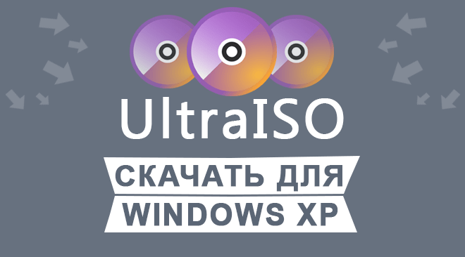

|  | Категория: | Работа с файлами |
| Поддерживаемые ОС: | Windows XP | |
| Разрядность: | 32 bit, 64 bit, x32, x64 | |
| Для устройств: | Компьютер | |
| Язык интерфейса: | на Русском | |
| Версия: | Последняя | |
| Разработчик: | EZBSystems |
Бесплатно установить UltraISO для Windows XP, полезный помощник в работе с образами дисков. Программа собрала в себе впечатляющий функционал, а также скорость создания и хранения образов. Можно понять по названию утилиты, что речь идет об образах формата .iso, что считается популярным расширением.
 |
 |
 |
Ультра ИСО для Виндовс XP на компьютер
Главная задача программы состоит в обработке содержимого в образе, то есть открытия и редактирования с дальнейшей записью на флешку или диски. Помимо этого, программа создает виртуальные приводы, использующиеся для монтирования образов. Как для корпоративного, так и для личного применения. Программа понравится пользователям, которые пользуются лицензионными дисками или даже игрового и музыкального содержания (аудио CD-диски).

Даже несмотря на то, что спрос дисковых накопителей уменьшился — востребованность не снизилась. Утилита непрерывно обновляется, добавляются новые функции и исправляются старые. Для такой компактной утилиты перечень функций велик. Выделяется также возможность проверки, выбора скорости и метода при записи дисков. В бесплатном варианте размер образа ограничен, на работу с диском выделяется 50 ГБ, этого количества хватает обычному пользователю. К услугам также предоставляется UltraISO Premium с отметкой в 2 ТБ, для заядлых геймеров.
UltraISO для версий windows:
Скачать UltraISO для windows XP бесплатно
| Приложение | OS | Распаковщик | Формат | Версия | Интерфейс | Загрузка |
|---|---|---|---|---|---|---|
| UltraISO (Ультра ИСО) | Windows XP | OpenBox | x32 | Бесплатно | на русском | |
| UltraISO (Ультра ИСО) | Windows XP | OpenBox | x64 | Бесплатно | на русском | |
| UltraISO (Ультра ИСО) | Windows XP | OpenBox | x32 — x64 | Бесплатно | на русском | |
Активировать программу можно взяв ключ активации или заменить файл в папке установленной программы. (пароль на архиве 4374) |
||||||
Как установить UltraISO для windows XP:
Запустите файл.

Ознакомьтесь с информацией и нажмите "Далее".

Нажмите "Далее", или снимите галочки с рекомендуемого ПО и нажмите "Далее". Если снять все галочки, рекомендуемое ПО не установится!

После всех шагов нажмите "Установить".

Работать с программой легко и справиться с этим сможет каждый. Выберите источник, добавьте файлы и нажмите кнопку записи. Так выглядит процедура, а оставшийся процесс – создание образа и запись. На протяжении процесса будет отображаться строка состояния, которая будет оповещать какая часть уже выполнена и сколько времени осталось ожидать до окончания. UltraISO — незаменимый инструмент при работе с образами дисков. Освоение функционала пройдет быстро и без затруднений: за счет схожести интерфейса с проводником Windows, будет легко даже начинающим пользователям.
Классно спасибо что помогли
нужна прога. Спасибо.
Удобная программа для загрузки с флэшек.
Для заливки болванок для меня стала самой оптимальной прогой
Сайт бомба, честно говоря 😍🔥
Понятное описание. И видео, для закрепления информации. Спасибо.